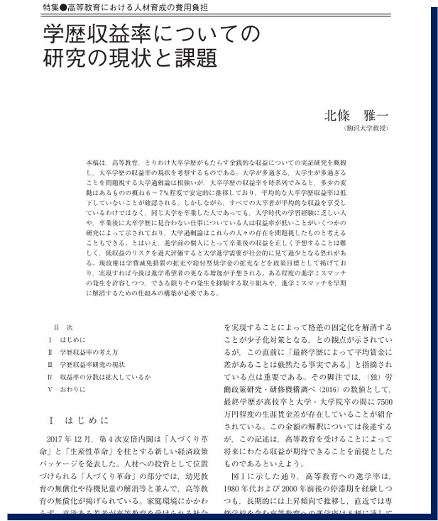
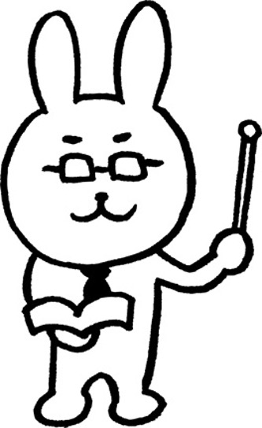

01 大学での学びと履修体系
- クラスの仲間との交流を深める。
- 高校とは異なる「大学での学び」は、「問題意識をもち、情報を批判的に吟味し、自分で考えをまとめて表現する」ことに主眼が置かれることを理解する。
- 大学で学ぶ社会科学とはどのような学問かを理解し、専門科目の履修に向けて必要な学びについて考える。
- 大学における外国語、教養教育科目の構成を理解し、これらの科目の学びの意義について考える。
- 履修登録ができているか、必修、選択などの履修について再度確認する。
アイスブレイク 1
バースデーライン
- 今から一言も話さないでください。
話すこと、筆談は禁止（ジェスチャーのみOK）。 - 全員起立してください。
- それでは、そのまま一言も話さない状態で、誕生日の早い順（1月1日〜12月31日）に1列で並んでください。
- 制限時間は3分です。
アイスブレイク 2
共通点探し
- 6人、6人、7人のグループを作ります。
- それでは、今から「〇〇（テーマ）」について、各グループでできるだけ多くの共通点を見つけてください。
- 休日の過ごし方
- 好きな食べ物
- 最近のマイブーム
- 子どもの頃の思い出
- 行ってみたい旅行先
- 行ったことがある場所
- 趣味や特技
- 制限時間は5分です。
大学の現状
以下のデータは、「令和5年9月25日 文部科学省会議資料 資料1-3 参考資料集 大学等進学者数に関するデータ 関係」からの抜粋です。
進学者数と進学率の動向
18歳人口の推移：長期的には減少傾向にあり、令和23年（2041年）には約79万人まで減少すると予測されています。
進学率：令和4年度の大学進学率は56.6%、短大を含めると60.4%です。専門学校等を含めた高等教育機関全体の初回進学率は約83.8%に達しています。
男女別：女性の大学進学率の上昇が顕著で、1975年と比較して約40ポイント増加しています。
大学・短大の現状
設置数：短期大学は四大化や廃止により減少しており、国立大学も平成16年の法人化以降、減少傾向にあります。
経営状況：私立大学の約48%が入学定員未充足（令和4年度）となっており、特に地方の中小規模大学において厳しい状況が見られます。
地域差：東京や京都などの都市部には他県からの流入者が多い一方、多くの道県では流出超過となっています。
多様な学習者の動向
社会人：大学（学部）の社会人入学者数は令和3年度に約1.9万人と過去最多を記録しました。
留学生：2022年時点の留学生数は約23万人です。出身国別では中国（約10.4万人）が最も多く、次いでベトナム、ネパールとなっています 。
大学に行く意味はあるのか？

北条雅一 (2018).「学歴収益率についての研究の現状と課題」『日本労働研究紙』, No.694
本稿は、高等教育、とりわけ大卒学歴がもたらす金銭的な収益についての実証研究を概観 し、大卒学歴の収益率の現状を考察するものである。
大学が多過ぎる、大学生が多過ぎることを問題視する大学過剰論は根強いが、大卒学歴の収益率を時系列でみると、多少の変動はあるものの概ね6～7％程度で安定的に推移しており、平均的な大卒学歴収益率は低下していないことが確認される。
しかしながら、すべての大卒者が平均的な収益を享受しているわけではなく、同じ大学を卒業した人であっても、大学時代の学習経験に乏しい人や、卒業後に大卒学歴に見合わない仕事についている人は収益率が低いことがいくつかの研究によって示されており、大学過剰論はこれらの人々の存在を問題視したものと考えることもできる。
とはいえ、進学前の個人にとって卒業後の収益を正しく予想することは難しく、低収益のリスクを過大評価すると大学進学需要が社会的に見て過少となる恐れがある。
現政権は学費減免措置の拡充や給付型奨学金の拡充などを政策目標として掲げており、実現すれば今後は進学希望者の更なる増加が予想される。
ある程度の進学ミスマッチの発生を許容しつつ、できる限りその発生を抑制する取り組みや、進学ミスマッチを早期に解消するための仕組みの構築が必要である。
社会科学とは
- 社会現象を研究の対象とする科学の総称
- 政治学・法律学・経済学・社会学・社会心理学・教育学・歴史学・民族学およびその他の関係諸科学
- その他、自然科学、人文科学
大学の講義と履修について
大学の授業時間
- 90分～105分を1時限（1コマ）として実施。
- 1コマ90分の場合には2単位だと15回、1コマ105分の場合は13回
- 各回の講義に2時間の事前学習（予習）と2時間の事後学習（復習）が必要
- 1日に履修する科目数はせいぜい3科目
単位
- 多くの大学では卒業するために124単位以上の取得が必要である。
- 拓殖大学政経学部の場合は126単位以上を修得し、4年時に年間8単位以上履修し、演習科目または課題解決型科目を2単位以上履修する。
- 授業を受講しても、最終的に各科目の試験に合格しなければ単位は取得できない。
学生という呼称（学校教育法）
- 幼児：幼稚園や保育園等で就学前教育を受けている者
- 児童：小学校等の初等教育を受けている者
- 生徒：中学校および高等学校あるいは専修学校や各種学校で教育を受けている者
- 学生：高等専門学校あるいは短期大学、大学および大学院に在籍する者
大学生活の自由度
誰からも拘束されず、何らのしがらみもなく、何をするにもすべて自分自身の判断と都合によって行動できます。
社会規範に反しない限り、学校側が学生の日常生活を管理することは基本的にありません。
自己を厳しく律するしか方法はありません。
4年間を有意義に過ごして欲しいです。
大学教員とは

教育者（教員）であると当時に研究者です。
学内業務、他大学での非常勤、学会活動、官公庁の委嘱による各種審議会委員などなど、を行なっています。
学外での活動の多くは有償無償を問わず大学教員が担う社会的使命です。
大学教員は常時大学にいるとは限りません。
メールでアポイントを取って訪ねる、オフィスアワーに訪ねるようにしてください。
大学における学びの構造
大学のカリキュラムは、大きく分けて「専門教育科目」と「全学共通科目（教養・外国語など）」で構成されています。
1年次の皆さんは、まずこの「全学共通科目」を多く履修することになりますが、一見すると自分の専門分野とは無関係に思えるかもしれません。
これらの科目がなぜ設置されているのか、その構成と学びの意義について考えましょう。
大学教育の二階建て構造
日本の大学教育は、しばしば「二階建て」の構造に例えられます。
一階部分：教養教育・外国語教育（基盤）
全ての学問の土台となる知的能力、言語能力、思考の枠組みを養う。二階部分：専門教育（応用）
特定の学部・学科における高度な知識や技能を修得する。
土台（教養）がしっかりしていなければ、高い塔（専門性）を建てることはできません。教養教育は、専門性を支えるための「知のインフラ」です。
外国語教育の構成と意義
- 必修英語：基本的なコミュニケーション能力（Reading, Writing, Listening, Speaking）の強化。
- 初修外国語（第二外国語）：ドイツ語、フランス語、中国語、韓国語、スペイン語など。
情報収集能力の飛躍的向上
日本語でアクセスできる情報は、インターネット上の全情報の数パーセントに過ぎません。特に最新の科学技術や社会動向、経済統計の多くは英語で発信されます。英語を学ぶことは、「アクセスできる世界」を広げることに直結します。
「異なる思考体系」への理解
言語は単なる道具ではなく、その背景にある文化や価値観と密接に結びついています。外国語を学ぶ過程で、日本語特有の論理構造を客観視し、多角的な視点を持つことが可能になります。
選択外国語（卒業単以外・任意履修）
資格・検定英語、実践英語、地域言語などにもぜひ挑戦しましょう。将来の選択肢が広がります！
教養教育科目の構成と意義
教養教育は、英語では “Liberal Arts”（リベラルアーツ）と呼ばれます。これは「人間を自由にするための術」を意味します。
拓殖大学では5系列（AからE）で構成されています。
- A系列：国際性を高める
- B系列：専門性の幅を広げる
- C系列：人間性を高める
- D系列：キャリア形成を行う
- E系列：データ活用能力を養う
専門知を社会に繋げる「俯瞰力」
例えば、最新のAI技術（専門知）を開発しても、それが社会にどのような倫理的影響（哲学）を与え、どのような法的規制（法学）が必要になるかを知らなければ、実社会で正しく運用することはできません。教養は、専門知を社会の中でどう活かすかを判断する「コンパス」になります。
変化の激しい時代を生き抜く「汎用的スキル」
現代社会では、職業のあり方が数年単位で変化します。特定の専門知識だけでは一生を乗り切ることは困難です。教養教育を通じて培われる以下の能力は、どのような職種にも転用可能な 「トランスファラブル・スキル」です。
- 批判的思考力（Critical Thinking）
- 問題発見・解決能力
- 論理的コミュニケーション力
大学における外国語や教養教育は、単なる「卒業に必要な単位」ではありません。
- 外国語は、世界を広げるための「窓」。
- 教養教育は、複雑な社会を歩むための「地図」。
これらを意識して学ぶことで、皆さんの専門分野の学びはより深く、より豊かなものになるはずです。
カリキュラムツリーとプログラム
経済学科における標準的な学びのプロセスは以下のとおりです。
1年次：経済学の基礎を学ぶ
2年次：講義科目・ゼミナールで自分の関心や進路に応じた学びを開始する
3年次：研究テーマを設定し、分析能力とプレゼンテーション能力を修得する
4年次：専門科目の学びを活用し、ゼミナールで研究の成果を発表する
上記プロセスを具現化するために、拓殖大学政経学部経済学科では、6つの系統と3つのプログラムが用意されています。（履修要項P.52 参照）
系統
- 応用経済系
- 理論経済系
- 国際経済系
- 計量経済系
- 経済史・経済思想系
- 地域研究
プログラム
- グローバル・スタディーズプログラム
- SDGs プログラム
- データ・AI活用プログラム
進級要件
拓殖大学政経学部では、1年次から2年次にのみ進級要件（22単位以上の取得）があります。
履修登録の確認
履修登録期間 13日（月）まで（14日（火） AM 3:00 まで）
抽選漏れ講義の振替を確実に！
以下単位の履修登録がされていることを確認してください。
前期：22単位（最大23単位）
後期：22単位（最大23単位）
1年合計：44単位（最大44単位）
4月14日（火）から17日（金） 履修登録確認期間
履修登録取消制度
- 履修登録取消期間 5月7日（木）12：00 から 5月9日（土）（翌朝 3：00）
履修登録取消制度とは、履修登録して授業を受けたものの、「授業内容が勉強したいものと違っていた」 「授業についていけるだけの学力が不足していた」等の理由により履修登録の取り消しを認めるもので、単位修得できないことにより GPA（成績）が下がることを回避するための制度です。
所定期間に Takudai Portalで「履修取り消し申請」をすることで履修登録の取り消しが認められます。
取り消し科目数の制限は設けません。ただし、全科目の取り消しはできません。なお、４年生は、取り消し後の履修登録単位数が、各学部で定められている最低履修登録単位数を下回る ことはできません。
通年科目は、前期にのみ取り消すことができます。
取り消した科目は、学業成績表の最終評価に［Ｗ］が付きます。なお、取り消した科目は、当該年度の学業成績表にのみ記載され、次年度以降は記載されません。
登録を取り消しても、履修登録単位制限の計算からは除外されません。
取り消した科目は、取消期間終了後、Takudai Portal の My 時間割で確認してください。取り消されていない場合は、所定の期日（別途お知らせ）までに学務課まで申し出てください。所定の期日以降の申し出は一切認めません。
年度内再履修制度について（文京）
通常、同一科目を年度内（前期・後期）に複数回履修することはできません。ただし、以下の科目は、前期に単位を未修得だった場合、９月の履修登録変更期間（9月１４日～１８日）内に申請すれば後期に再履修が認められます。なお、申請方法は学務課からの指示に従ってください。
1年必修科目 【法律政治学科・経済学科共通】 １. アカデミック・スキル ２. １年英語①Ⅰ・②Ⅰ ３. １年地域言語Ⅰ（中国語・フランス語・ドイツ語・韓国語・スペイン語のみ）
【法律政治学科】 ５. 憲法（基本的人権）○ ６. 政治学原論○
【経済学科】 ７. マクロ経済学Ⅰ● ８. ミクロ経済学Ⅰ●
- これらの科目はすべて１年生を対象とした科目ですので、できる限り２年生になる前に 修得してください。
- 〇の科目は法律政治学科の学生のみ、●の科目は経済学科の学生のみが対象となります。
- 「2026年度 時間割表・履修登録資料」18頁にもこの制度についての説明があります。
本日の振り返り
- クラスの仲間との交流を深める。
- 高校とは異なる「大学での学び」は、「問題意識をもち、情報を批判的に吟味し、自分で考えをまとめて表現する」ことに主眼が置かれることを理解する。
- 大学で学ぶ社会科学とはどのような学問かを理解し、専門科目の履修に向けて必要な学びについて考える。
- 大学における外国語、教養教育科目の構成を理解し、これらの科目の学びの意義について考える。
- 履修登録ができているか、必修、選択などの履修について再度確認する。
課題 1：自己紹介のエクセル
1年生の後期になると2年次から開始されるゼミのエントリーが行われます。その際、ほとんどの先生が「ゼミエントリーシート」（エクセルで作成）をメールで送付するように指示します。
しかし、多くの学生がエクセルやコンピューターの扱いに不慣れなことから、満足にエントリーシートを提出できません。（手書きのシートを写メに撮り送る学生も多くいます、、、。）
そこで、アカデミックスキルの最初に行う課題「自己紹介」を、この「ゼミエントリーシート」の形式に沿って行います。
Blackboard にアップロードされている「課題1_自己紹介_ゼミエントリーフォーマット」をダウンロードし、記入してください。
4月28日（火）24：00までに Blackboard から提出してください。
エクセルの使い方などが分からない人は、4月27日（月）のアカデミックスキルで説明します。
なお、オリエンテーションの際に配られた「個人記録カード」は提出する必要はありません。（上記のエクセル自己紹介フォームで代替します。）
4月20日（月） 合同授業
C 201 教室
内容
- 図書館ガイダンス
- 情報倫理
「情報倫理ガイドライン」を Blackboar からダウンロードしておくこと